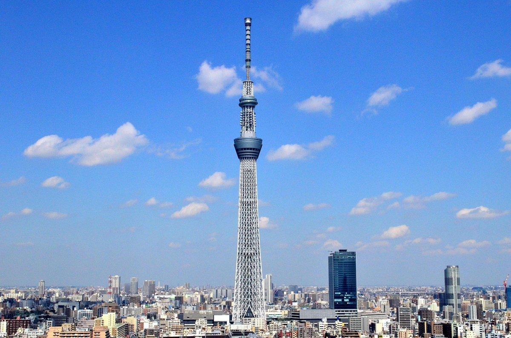

Lugares atractivos de tokio
- Senso-ji temple
- Tokio skytree 

Es el templo mas antiguo de tokio, cosntruido en el 628
y reconstruido despues de que fuera completamente destruido.
Una torre multiusos que forma parte de un enorme complejo
comercial y de ocio, donde se puede disfrutar de tiendas,
restaurantes e incluso un acuario. Sin embargo, lo más destacable
del complejo de esta torre, que permite disfrutar de las vistas de Tokio.